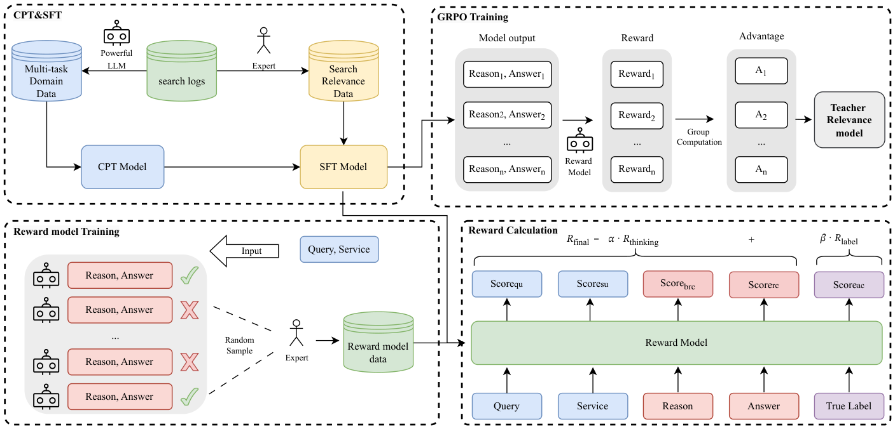

From Reasoning LLMs to BERT: A Two-Stage Distillation Framework for Search Relevance (从推理大模型到BERT：面向搜索相关性的两阶段蒸馏框架)
- 会议/期刊: WWW 2026 (Industry Track)
- 作者与机构: Runze Xia, Yupeng Ji, Yuxi Zhou, Haodong Liu, Teng Zhang (美团)；Piji Li (南京航空航天大学)
- 推荐链路定位: 精排（搜索广告 query-service 相关性判别）
- 研究方向: 大语言模型推荐 (LLM4Rec) / CTR 预估与特征交叉
- 论文原文: https://arxiv.org/abs/2510.11056v3
- 开源代码: 暂未开源
TL;DR (1分钟核心速览)
电商搜索相关性精排要求毫秒级延迟，无法直接部署推理 LLM；而 BERT 类判别模型缺乏深层语义推理能力（如"皮肤焕新"与"面部水疗"的等价判断）。本文提出两阶段框架：先用 CPT→SFT→多维奖励 GRPO 三步打造领域自适应推理教师，自动为 268 万 query-service 对标注标签与推理链；再用对比推理自蒸馏 (CRSD) 将同一 BERT 在"带推理输入"与"标准输入"下的行为建模为师生关系，用 InfoNCE 对齐 [CLS] 表征，使 6 层 BERT 在推理时无需推理链即可内化推理能力。离线 Macro F1 达 0.7076（保留教师 98.6% 性能），线上 A/B 中 AdCTR +0.91%、AdCVR +1.06%。
Background & Motivation (背景与核心矛盾)
- 主流范式: 工业搜索精排普遍采用 BERT 类 encoder-only 交叉编码器做 query-service 相关性三分类（不相关/中等/相关），以换取毫秒级吞吐。
- 前人局限: ① 判别模型只学表层语义匹配，缺乏世界知识与多步逻辑，面对"表述不同但业务等价"的样本系统性误判；② 直接蒸馏推理 LLM 面临架构异构（decoder-only vs. encoder-only 表征空间不可直接对齐）与只模仿输出、不迁移过程两大障碍。
- 核心洞察 (Key Insight): 通用 LLM（Qwen3-8B、DeepSeek-R1）零样本/少样本在该任务上 Accuracy 仅 0.51–0.62，说明领域知识缺失比推理能力缺失更致命；同时，若同一模型在"见过推理链"时能判得更准，则可通过自蒸馏把这一状态"压"进标准输入的参数中。
- 本文切入点: 先造一个懂业务的推理教师保证标注质量，再用"同模型双输入配置"绕开跨架构对齐难题。
Method (核心方法设计)
1. 整体框架 (Overall Architecture)
第一阶段构建教师 \(M_t\)：以 Qwen3-8B 为底座，先在 700 万多任务领域语料（query 理解、service 理解、双向生成、pointwise/pairwise/setwise 相关性共 7 类任务）上做 CPT 注入平台知识；再在 3.4 万条人工标注推理链上 SFT 激发推理格式；最后用五维奖励模型 + GRPO 做偏好优化，产出可靠推理路径。该教师为 268 万搜索日志对自动打标（标签 + 推理链）。第二阶段训练 6 层中文 BERT 学生 \(M_s\)：通过 CRSD 将"标准输入"与"推理增强输入"两种配置构成师生对，用批内对比对齐 + 双路分类损失联合优化，推理时仅需标准输入。
flowchart TD
A["700万多任务领域语料"] --> B["CPT: 领域知识注入"]
B --> C["SFT: 3.4万人工推理链"]
C --> D["五维奖励模型 + GRPO 偏好优化"]
D --> E["教师LLM: 268万对自动标注(标签+推理链)"]
E --> F["CRSD: 同一BERT双配置自蒸馏"]
F --> G["6层BERT在线精排(仅标准输入)"]
2. 关键设计拆解 (Key Designs)
-
多维加权奖励的 GRPO 偏好优化：仅用答案正确性做奖励存在信号稀疏与 reward hacking（答对但推理错）。本文将奖励模型拆为五维专家打分（Query 理解、Service 理解、业务规则合规、推理一致性、答案正确，各 0–4 分），聚合成过程奖励与标签奖励： $\(R_{\text{final}} = \alpha \cdot R_{\text{thinking}} + \beta \cdot R_{\text{label}}\)$ 其中 \(R_{\text{thinking}}\) 为前四维均值。奖励模型与专家一致率达 89.77%，稠密信号迫使策略不仅答对、还要"按对的方式想"。
-
对比推理自蒸馏 (CRSD)：跨架构对齐的痛点在于外部句向量编码器与 BERT 语义空间错位，监督是"间接"的。CRSD 改为同模型自对齐：教师配置输入
<query, service, reason>得 \(\text{cls}^r_i\)，学生配置输入<query, service>得 \(\text{cls}_i\)，批内以同样本为正对、跨样本为负对做 InfoNCE： $\(\mathcal{L}_{\text{align}} = -\sum_{i=1}^{N}\log\frac{\exp(\text{sim}(\text{cls}_i,\text{cls}^r_i)/\tau)}{\sum_{j=1}^{N}\exp(\text{sim}(\text{cls}_i,\text{cls}^r_j)/\tau)}\)$ 直觉：强迫标准输入下的表征"靠近自己看过推理链时的表征、远离他人的表征"，从而把推理逻辑压入参数而非依赖显式文本。 -
训练目标与推理效率：总损失 \(\mathcal{L}_{\text{CRSD}} = \mathcal{L}_{\text{sce}} + \gamma \mathcal{L}_{\text{tce}} + \delta \mathcal{L}_{\text{align}}\)，\(\gamma=\delta=0.01\)（小权重防止过度依赖长推理文本、防止对齐压过分类）。教师配置最大长度 150、学生 64；推理阶段仅走学生配置，延迟与原始 6 层 BERT 完全一致，无额外开销。
Experimental Setup & Evaluation Protocol (实验设置与评估协议)
- 数据集与预处理: 工业私有数据，无公开统计表，关键规模如下：
| 数据用途 | 规模 | 说明 |
|---|---|---|
| CPT 多任务语料 | 700 万 | 7 类任务，多 LLM 自动标注 |
| SFT / GRPO 人工标注 | 34,002 / 11,634 | 同分布互斥子集 |
| 蒸馏数据 | 268 万 query-service 对 | 教师自动标注，标签分布 16.2%/11.7%/72.1% |
| 人工评测集 | 约 12,000 | 交叉校验的三分类金标 |
- 数据划分与防穿越 (Splitting Strategy): 采用独立人工标注测试集划分；SFT 与 GRPO 子集互斥，确保偏好优化在未见同分布样本上验证泛化性。
- 排名评测协议 (Ranking Protocol): 任务为三分类相关性判别而非全库排序，指标为 Accuracy、Macro F1、Weighted F1；显著性用 McNemar 检验（\(p<10^{-8}\)）。
- 对比基线与超参设置: 教师侧对比 Qwen3-8B / DeepSeek-R1 的 zero/few-shot 与 SFT、CPT+SFT、GRPO 变体；蒸馏侧对比标准数据蒸馏、BGE-M3 句向量对齐基线。学生为 6 层中文 BERT，学习率 5e-5、批大小 4096、训练 5000 步。
Key Experimental Results (实验关键数据)
1. 主实验对比 (Main Results)
教师模型各阶段（表 3 精选）：
| 方法 | Accuracy | Macro F1 | Weight F1 |
|---|---|---|---|
| Qwen3-8B (Zero-shot) | 0.5480 | 0.3955 | 0.5748 |
| DeepSeek-R1 (Few-shot) | 0.6197 | 0.4696 | 0.6638 |
| SFT Baseline | 0.7708 | 0.6980 | 0.7485 |
| CPT+SFT | 0.7762 | 0.7032 | 0.7538 |
| + GRPO (\(R_{\text{label}}\)) | 0.7812 | 0.7101 | 0.7634 |
| + GRPO (Weighted) | 0.7873 | 0.7174 | 0.7701 |
蒸馏阶段（表 4）：
| 方法 | Accuracy | Macro F1 | Weight F1 |
|---|---|---|---|
| Baseline (数据蒸馏) | 0.7645 | 0.6945 | 0.7461 |
| Baseline Reasoning Distill. | 0.7678 | 0.6959 | 0.7486 |
| CRSD + \(\mathcal{L}_{\text{align}}\) | 0.7707 | 0.6993 | 0.7522 |
| CRSD Full (ours) | 0.7761 | 0.7076 | 0.7583 |
线上 A/B（两周，实验组 10% vs. 基线 30% 流量）：
| 指标 | AdCTR | AdCVR | GTV | UVCTR | PVCTR |
|---|---|---|---|---|---|
| 相对提升 | +0.91% | +1.06% | +0.40% | +0.11% | +0.18% |
2. 消融实验 (Ablation Study)
| 配置 | Accuracy | Macro F1 | Weight F1 |
|---|---|---|---|
| CRSD Full | 0.7761 | 0.7076 | 0.7583 |
| w/o Reasoning Path | 0.7639 | 0.6947 | 0.7463 |
| w/ Random Reasoning | 0.7624 | 0.6918 | 0.7440 |
3. 关键实验发现 (Key Findings)
- 领域知识是教师质量的第一杠杆：通用 LLM 最好仅 0.6197 Accuracy，而 CPT 一步就把 Macro F1 从 0.6980 拉到 0.7032，说明平台术语与业务规则无法靠通用世界知识弥补。
- 稠密过程奖励优于稀疏结果奖励：加权 GRPO 相比仅标签奖励再涨 Macro F1 0.7101→0.7174，验证"答对且想对"的奖励设计确实抑制了 reward hacking。
- 推理链的语义内容而非长度是增益来源：去掉推理路径后性能回落到基线（0.6947），喂随机推理链甚至低于基线（0.6918），证明 CRSD 的收益来自真实逻辑对齐而非输入变长或结构伪影；最终学生保留教师 98.6% 的 Macro F1，线上坏案例率下降 30.5 个百分点。
Highlights, Limitations & Rating (亮点、对比与审稿评价)
- 与代表作对比 (vs. Prior Work): 相比 Agrawal 等用外部句向量编码器对齐推理路径的做法，CRSD 消除了跨模型语义空间错位，且不依赖额外编码器；相比 Shang 等在 Walmart 的 LLM 蒸馏实践，本文额外解决了教师本身的领域适配问题；相比 DisRanker 的 pointwise+margin-MSE 蒸馏，本文迁移的是"过程"而非仅分数分布。
- 可迁移亮点: ① "同模型双输入配置"是绕开异构架构对齐的通用技巧，可迁移到任何"富输入训练、贫输入推理"的场景（如多模态缺失、长上下文压缩）；② 五维奖励分解 + 加权 GRPO 可直接复用于其他需要可解释中间过程的判别任务。
- 审稿级局限批判: ① 全部实验基于美团私有数据，缺乏公开基准复现，教师三步流程（700 万 CPT + 人工标注 + RL）成本高昂，中小团队难以复制；② 超参 \(\gamma,\delta\) 固定为 0.01 未做敏感性分析，且三分类标签分布严重不均衡（相关类占 72.1%），Macro F1 提升幅度有限（相对基线约 +1.9%），泛化到多级细粒度相关性尚待验证。
- 四维评分: 创新性 ⭐⭐⭐⭐ | 实验扎实度 ⭐⭐⭐⭐ | 方法清晰度 ⭐⭐⭐⭐⭐ | 落地价值 ⭐⭐⭐⭐⭐